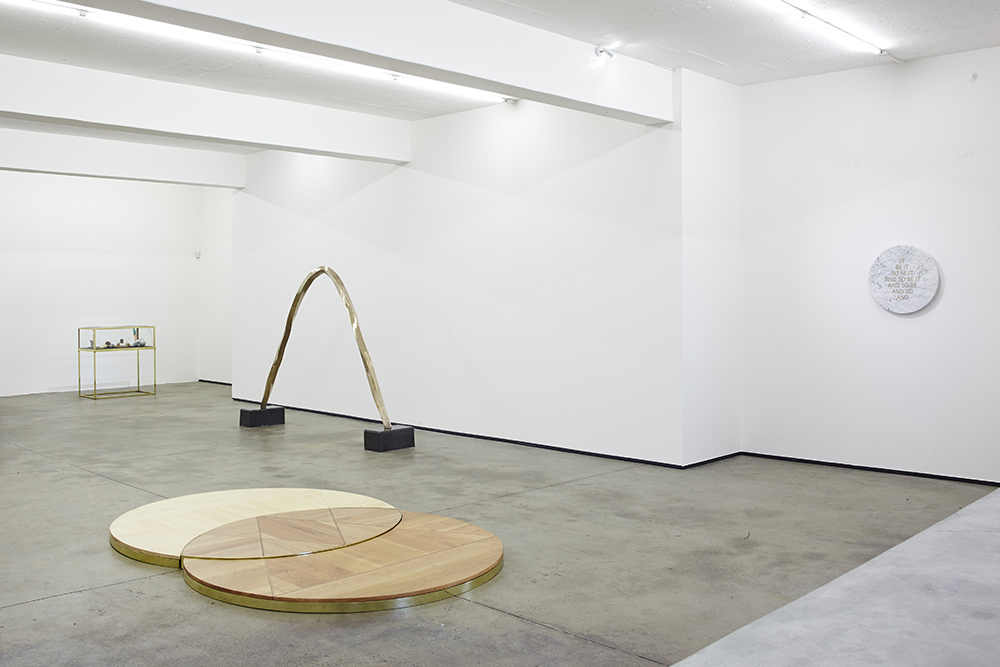
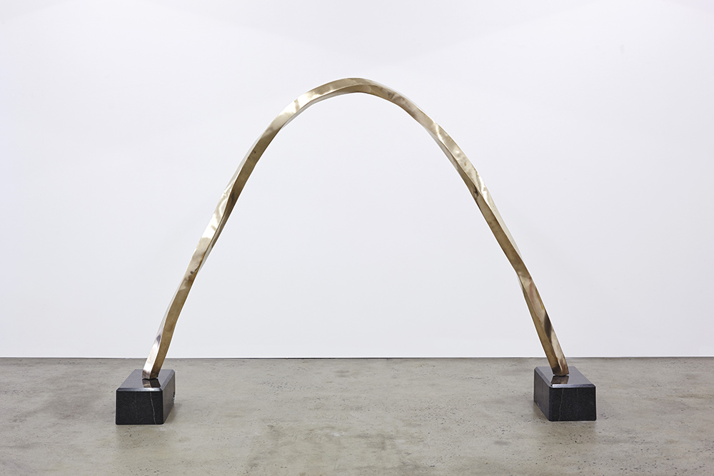

Golden Age Rising
Solo Show at Whatiftheworld Gallery. Woodstock, Cape Town, South Africa.
Exhibition Opening: Saturday 12 April 2014
Time: 11:00 - 14:00
Dress Code: White
Exhibition Closure: Saturday 24 May 2014
"One finds here, very rarely in the low lying areas, more frequently as one goes farther up, a clear and extremely hard stone that is spherical and varies in size—a kind of crystal, but a curved crystal, something extraordinary and unknown on the rest of the planet. Among the French of Port-des-Singes, it is called peradam. Ivan Lapse remains puzzled by the formation and root meaning of this word. It may mean, according to him, “harder than diamond,” and it is; or “father of the diamond,” and they say that the diamond is in fact the product of the degeneration of the peradam by a sort of quartering of the circle or, more precisely, cubing of the sphere. Or again, the word may mean “Adam’s stone,” having some secret and profound connection to the original nature of man. The clarity of this stone is so great and its index of refraction so close to that of air that, despite the crystal’s great density, the unaccustomed eye hardly perceives it. But to anyone who seeks it with sincere desire and true need, it reveals itself by its sudden sparkle, like that of dewdrops. The peradam is the only substance, the only material object whose value is recognized by the guides of Mount Analogue. Therefore, it is the standard of all currency, as gold is for us”. (80-81) [1]
[1] Daumal, René. Mount Analogue: A Novel of Symbolically Authentic Non-Euclidean Adventures in Mountain Climbing. Trans. Carol Cosman. Overlook, 2004.

Installation View
And So Be It
Marble and Brass
60 x 60 x 8cm
2014
Edition of 5

Porcelain Catenary Arch with Yogi de Beer
Bronze, Granite
193 x 262 x 50cm
2014
Edition of 3

Spring Equinox 21st September 2013 Tankwa Karoo with Ryan, Georgia, Christo, Adam, Andrew Leon and Anton
Maple, Cherry, Steel
284 x 188 x 8cm
2014
The Road to Eleusis with Demeter and Persephone
Cherry, Meranti, Oregon Pine, Yellowood, Japanese Cedar, Birds Eye Maple, African Mahogany, Iroko, Mahogany Sapele
Dimensions Variable
2014
Mount Analogue (in C)
Lowrey Organ, Jan Coetzee Quartz, Oscilloscope, Reel to Reel, RF signal generator, Light to sound modulator, sunlight
Dimensions Variable
2014
The Light-to-Sound modulator accepts the input from eight light sensors/ photoresistors, receiving light reflected by and passing through the facets of a Quartz crystal. According to the light levels received, the volume of eight tones, each generated by the Lowrey organ, and all from a Major C chord, are individually modulated. The volume adjusted tones are mixed into one channel which is played through the Leslie speaker unit. Simultaneously the output is recorded onto tape and broadcast on the 107.9 MHz FM channel by the FM signal generator.
Seven Sermons to the Dead
Mixed Media
108 x 101 x 61cm
2014
Fool's Gold
Polished Sandstone, Stainless Steel
104 x 70 x 56cm
2014